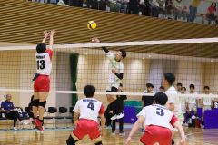

運動部活動記録


■全国大会
■全国大会
- 2024-8/16～20
レスリング部 会場：ウカルちゃんアリーナ(滋賀県)
第４０回全国高校生グレコローマンレスリング選手権記念大会
グレコローマン ５１ｋｇ級 出場 森 翔章(創造１)
グレコローマン ６５ｋｇ級 出場 武一響生(産デ１)
グレコローマン １２５ｋｇ級 出場 池田隆之介(創造３)
- 2024-8/8～13
ボクシング部
令和６年度全国高等学校総合体育大会ボクシング競技大会
(第７８回全国高等学校ボクシング選手権大会)
ピン級初戦棄権 林 龍成(創造３)
ライトフライ級５位 有本 倖(機械３)
フライ級５位 吉田 惇誠(機械３)
- 2024-8/4～7
卓球部 会場：(長崎県大村市)
令和６年度近畿高等学校卓球選手権大会
学校対抗 １回戦敗退 和工２－３福井商
シングルス ２回戦進出 岡崎悠史(化学３)
- 2024-8/3～6
剣道部 会場：大分県レゾナック武道スポーツセンター
令和６年度全国高校総体剣道大会
女子団体 予選リーグ敗退
女子個人 ２回戦敗退 松井(産デ３) １回戦敗退 木村(産デ３)
- 2024-8/2～5
ウエイトリフティング部 会場：(長崎県諫早市)
令和６年度全国高等学校総合体育大会ウエイトリフティング競技大会
男子６７ｋｇ ２８位
女子７６ｋｇ ４位
- 2024-8/24～25
卓球部 会場：和歌山県立体育館
令和６年度国民スポーツ大会近畿ブロック大会
岡崎悠史(化学３)山形那月(創造２)レギュラーで出場 第４位で国体出場
監督:田中 昌(本校機械科教員)
- 2024-8/22～23
水泳部 会場：神戸市立ポートアイランドスポーツセンター
第７８回近畿高等学校選手権水泳競技大会
男子１００ｍ背泳ぎ 出場 米坂大輝(機械３) 記録1:04.63
男子２００ｍ背泳ぎ 出場 米坂大輝(機械３) 記録2:17.82
- 2024-7/20～22
卓球部 会場：YMITアリーナ(滋賀県草津市)
令和６年度近畿高等学校卓球選手権大会
学校対抗 ベスト１６ 和工２－３近江
シングルス ３回戦進出 脇地竜希(機械２)
ダブルス ３回戦進出 脇地(機械２)・山形(創造２)
- 2024-7/14～15
ソフトテニス部 会場：三段池科研電機テニスコート（京都府福知山市）
近畿高等学校ソフトテニス選手権大会
団体戦 初戦敗退 １－２ 奈良高校
- 2024-7/13～14
ウエイトリフティング部 会場：（石川県金沢市）
令和６年度全国高等学校女子ウエイトリフティング競技大会
６４ｋｇ級 １５位
７６ｋｇ級 ２位
- 2024-7/13～14
剣道部 会場：和歌山ビックホエール
第６２回近畿高等学校剣道大会
男子団体 ベスト１６
女子団体 ３位
男子個人 ベスト８ 東村(建築２)
女子個人 優勝 松井(産デ３) ベスト８ 杉山(産デ２)
- 2024-7/12～
バレーボール部 会場：大阪中央体育館
令和６年度近畿高等学校バレーボール優勝大会
兼 第７７回近畿６人制バレーボール高等学校男女選手権大会
２回戦敗退 ×京都大谷高校
- 2024-6/21～23
レスリング部 会場：滋賀県栗東市民体育館
令和６年度第６０回近畿高等学校レスリング選手権大会
グレコローマン ５１ｋｇ級 ３位 森 翔章(創造１)
グレコローマン １２５ｋｇ級 １位 池田隆之介(創造３)
- 2024-6/21～23
バスケットボール部 会場：和歌山ビックホエール
第７１回近畿高等学校バスケットボール大会
初戦敗退 ×奈良育英高校
- 2024-6/15～16
体操部 会場：滋賀ダイハツアリーナ
第７８回近畿高等学校体操競技選手権大会
個人総合８０位 岩淵 唯（産デ２）
- 2024-6/14～16
ボクシング部 会場：大阪朝鮮中高級学校（大阪府）
近畿高等学校ボクシング選手権大会
ピン級３位 林 龍成(創造３)
ライトフライ級優勝 有本 倖(機械３)
フライ級３位 吉田 惇誠(機械３)
- 2024-6/6～9
ヨット部 会場：和歌山セーリングセンター 7/17訂正
男子420級 ３位：山口晴路・林 瑠飛ペア ４位：蔭山 陵・宮前奏良ペア
男子レーザーラジアル級 ６位：山崎一路
※以上、全国大会(インターハイ)に出場
- 2024-2/17
ラグビー部 会場：東大阪花園ラグビー場
第７５回近畿高等学校ラグビーフットボール大会
初戦敗退
- 2024-11/21
レスリング部
令和６年度和歌山県高等学校レスリング新人大会
学校対抗戦 第２位
個人 51㎏級第3位 森 翔章(創1)・55kg級第3位 中辻皓也(土2)
- 2024-11/11
剣道部
令和６年度県下高校学年別選手権大会
男子１年生の部 優勝 加藤龍之介(建1)・２位 石川結也(電1)・３位 山本健太(創1)
女子１年生の部 優勝 乾 留菜(産1)・２位 川井真奈(機1)・３位 大沼麗花(産1)
女子２年生の部 優勝 杉山菜梛(産2)・２位 中原詩季(産2)
・３位 髙田安津季(産2) 同３位 菅 颯華(産2)
- 2024-11/7～9 会場：白浜町立総合体育館
卓球部
令和６年度和歌山県高等学校新人卓球大会
男子学校対抗戦 準優勝
男子シングルス 優勝 山形那月(創2)・3位 脇地竜希
男子ダブルス 優勝 山形那月(創2)・脇地竜希
- 2024-11/2
体操部 会場：田辺スポーツパーク体育館
令和6年度和歌山県高等学校体操競技新人大会
体操競技男子団体総合２位 上田蒼月(2)・峰 陽基(2)・有田篤生(2)・嶋田悠大(2)
- 2024-11/
山岳部
第２９回和歌山県高等学校スポーツクライミング大会
男子の部 第３位 筒井 陸(機1)・第４位 河合優輝(建1)
- 2024-8/9～11
陸上競技部 会場：紀三井寺競技場
第５７回和歌山県高等学校ユース陸上競技対校選手権大会
やり投げ 第２位：尾﨑 翔(創2) 近畿大会出場
- 2024-6/13～16
卓球部 会場：和歌山県立体育館
男子団体 優勝 (決勝 3-1和歌山商業)：全国大会・近畿大会出場
男子シングルス 優勝：岡﨑悠吏(化3) 全国大会・近畿大会出場
準優勝：仲村 陸(創3) 全国大会・近畿大会出場
３位：山形那月(創2) 全国大会・近畿大会出場
５位：脇地竜希(機2乙) 近畿大会出場
男子ダブルス 優勝：岡﨑悠吏(化3) 仲村 陸(創3) 全国大会・近畿大会出場
３位：山形那月(創2) 脇地竜希(機2乙) 近畿大会出場
９位：上野郁人(建3) 辻野暖日(機3乙) 近畿大会出場
- 2024-5/23～6/9
サッカー部 会場：上富田スポーツセンター,田辺スポーツパーク,他
2回戦 2,PK4-2,PK5田辺工業
- 2024-6/7,8
柔道部 会場：白浜町立総合体育館
男子団体 3位
男子個人 60kg級 準優勝：長尾将誠(化3)
女子個人 48kg級 準優勝：山東莉奈(創3)
- 2024-6/2～4
剣道部 会場：和歌山ビッグホエール
男子団体A 5位 近畿大会出場
女子団体A 優勝 全国大会・近畿大会出場
木村奏音(産3) 中原栞渚(建3) 松井美海(産3) 岡本 晴(建2)
菅 颯華(産2) 杉山菜梛(産2) 中原詩季(産2)
女子団体B 優勝・準優勝・３位
男子個人 ３位：東村綱大(建2) 近畿大会出場
女子個人 優勝：松井美海(産3) 全国大会・近畿大会出場
２位：木村奏音(産3) 全国大会・近畿大会出場
３位：杉山菜梛(産2) 近畿大会出場
- 2024-6/2,3
バレーボール部 会場：田辺スポーツパーク,他
男子３位：準決勝 0-2和歌山北[17-25,13-25] ３位決定戦 2-0日高[25-18,25-17]
- 2024-5/31～6/4
バスケットボール部 会場：県立体育館,河南体育館,海南市総合体育館,他
男子３位：準決勝 75-78初芝橋本 ３位決定戦 69-45近畿大学附属和歌山
- 2024-5/30～6/3
ソフトテニス部 会場：かわべテニスコート
男子団体 近畿大会出場：準々決勝 0- 2和歌山北 2回戦 2-0耐久 1回戦 3-0有田中央
- 2024-5/31～6/2
体操部 会場：和歌山体育館
男子２部
団体総合 優勝：上田蒼月(機2甲),峰 陽基(機2甲),有田篤生(土2),嶋田悠大(産2)
個人総合 優勝：嶋田悠大(産2)
２位：有田篤生(土2) 3位：上田蒼月(機2甲) 4位：峰 陽基(機2甲)
女子２部
個人総合 優勝：石川七海(産2)
女子１部
個人総合 ６位：岩淵 唯(産2) 近畿大会出場
- 2024-5/31～6/2
陸上競技部 会場：紀三井寺競技場
第77回全国高等学校陸上競技対校選手権大会近畿地区予選会県予選会
４×100mR 第4位 近畿大会出場
：中山凪海(機3甲),鷹巣光希(機3甲),栗本 京(機3乙),田中雄斗(建3)
やり投げ 第4位：尾﨑 翔(創2) 近畿大会出場
- 2024-5/30～6/2
ハンドボール部 会場：県立橋本体育館
2回戦 6-35那賀 敗者戦：1回戦 23-13耐久 2回戦 7-23向陽
- 2024-5/29～6/2
硬式テニス部 会場：和歌山市立つつじが丘テニスコート
男子団体 1回戦 1-2和歌山商業
- 2024-6/1
ラグビー部 「春期選手権大会」 会場：上富田スポーツセンター
準決勝 12-47近畿大学附属和歌山
- 2024-5/25,27
レスリング部 会場：ビッグウェーブ
学校対抗戦 第３位
個人対抗戦 51㎏級 森 翔章(創1) 55㎏級 大家 悠(創2) 60㎏級 中辻皓也(土2)
65㎏級 新谷燎佑(電3乙),武一響生(産2)
125㎏級 池田隆之介(創3),髙岡優吏(創3)
※以上近畿大開出場
- 2024-5/25,26
ウエイトリフティング部 会場：県立体育館
男子67kg級 優勝：堀 束颯(建2) 全国大会・近畿大会出場
女子76kg級 優勝：坂本桃果(建3) 全国大会・近畿大会出場